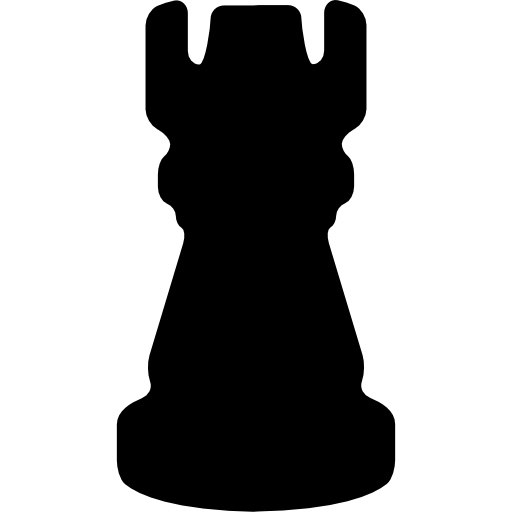

A torre é uma peça muito forte no xadrez, conhecida por sua movimentação em linhas retas. Ela pode se mover quantas casas quiser na horizontal ou na vertical, desde que não haja peças bloqueando o caminho. Cada jogador começa a partida com duas torres, posicionadas nos cantos do tabuleiro. No início do jogo, as torres costumam ficar mais passivas, já que muitas peças estão no caminho. Por isso, um dos objetivos principais é desenvolvê-las, conectando as torres e colocando-as em colunas abertas ou semiabertas, onde podem atuar com mais liberdade. A torre é especialmente poderosa no meio e no final da partida, quando o tabuleiro está mais aberto. Nessas situações, ela consegue controlar grandes espaços, pressionar o adversário e participar de ataques decisivos. Uma estratégia comum é colocar a torre na sétima fileira do adversário, onde ela pode atacar peões e restringir os movimentos das peças inimigas. Além disso, a torre participa de um movimento especial chamado roque, junto com o rei, que tem como objetivo proteger o rei e desenvolver a torre ao mesmo tempo. Em resumo, a torre é uma peça direta, forte e extremamente eficiente, especialmente quando bem posicionada. Saber utilizá-la em linhas abertas pode fazer uma grande diferença no resultado da partida.